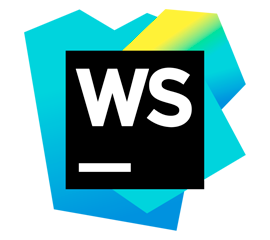

РЕЗЮМЕ
Денис Димитриу

Претендую на должность: front-end developer.
Знание вэб-технологий:
HTML, СSS, Javascript, jQuery, jQuery UI, Bootstrap, Git.
Теоретическая база (основы):
RISC Assembler, С, С++, PHP, CMS WordPress, ООП.
Использую программы:
IDE WEBStorm, NetBeans, Cloud 9, Sublime Text, Chrome Dev Tools, Photoshop.
Знание языков:
Русский - свободное владение,
Українська - вільне володіння,
English - intermediate.
Тренинги/курсы:
Базовый интенсив HTML Academy (верстка валидных кроссбраузерных вебстраниц с адаптивным дизайном);
Учебник learn.javascript.ru (навыки решения задач на языке Javascript, практика написания скриптов, работа с DOM).
Образование:
Высшее техническое.
Водительские права:
Категория В.
Личные качества:
Умею работать в команде, коммуникабельный, самообучаемый.
ЗНАНИЯ
На данный момент обладаю знаниями HTML/CSS на уровне кроссбраузерной валидной верстки веб-страниц, лендингов, шаблонов сайтов по макетам psd. Умею применять сетку Bootstrap для построения адаптивной разметки. Имею навыки добавления интерактивного поведения элементам страниц с помощью Javascript, jQuery (вложенные меню, слайдеры, модальные окна, валидация форм, анимация при скролле и т.д.). Умею работать в системе контроля версий Git. Имею базовые знания основ PHP, СУБД MySQL, клиент-серверной архитектуры веб-приложений. Придерживаюсь принципов прогрессивного улучшения в процессе разработки.

В последнее время активно интересуюсь сферой веб-разработки. Прошел подготовительные курсы по тестированию программного обеспечения и веб-приложений от компании QATestLab. Имею представление об этапах разработки и жизненном цикле программных продуктов. Понимаю принципы командной работы в IT-компании.
В перспективе планирую изучить работу с препроцессорами SASS, LESS, разработку сайтов на основе фреймворка Angular JS.
ИНСТРУМЕНТЫ
В качестве основного инструмента разработки я использую IDE WEBStorm, активно применяю возможности плагина Emmet для ускорения верстки, использую встроенный дебагер для отладки кода, а таже плагин к бразеру Chrome Jetbrain IDE support, который позволяет динамически отобразить результаты работы в браузере. Так же использую инструменты разработчика Dev Tools в браузере Chrome.
Еще пользуюсь браузерной IDE Cloud 9, которая удобно интегрирована с github и bitbucket.
Использую легкий редактор с подсветкой синтаксиса Sublime Text 3, когда необходимо внести небольшие правки.
Для работы с макетами формата psd использую Adobe Photoshop CC, а для ускорения процесса верстки применяю программу Avocode. Для верстки страниц с наибольшим приближением к оригиналу применяю плагин браузера Perfect Pixel.
В качестве локального сервера я использую серверные платформы OpenServer или XAMPP.
КОНТАКТЫ
Контактный телефон: +38 067 261 5117
E-mail: denis.dimitriy@gmail.com
Facebook: https://www.facebook.com/denis.dimitriy